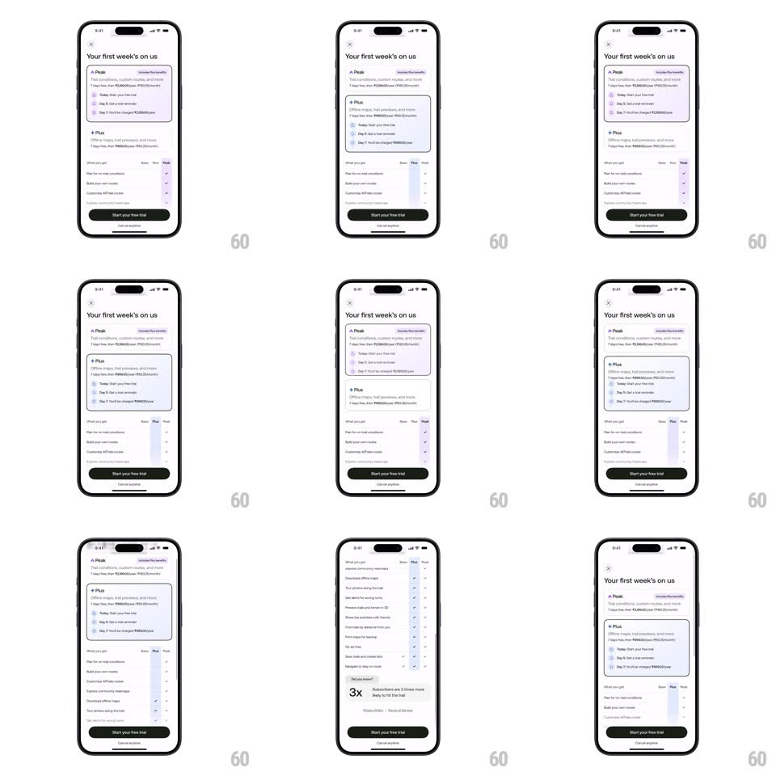

Media
Frame-by-frame

Rebuild this interaction 1:1: AllTrails' plan paywall - "Your first week's on us": tapping the Peak or Plus card expands it to reveal its trial timeline and checklist while the other collapses, and the comparison table's purple highlight column slides to match.

Rebuild this interaction 1:1: AllTrails' plan paywall - "Your first week's on us": tapping the Peak or Plus card expands it to reveal its trial timeline and checklist while the other collapses, and the comparison table's purple highlight column slides to match. ## Integration Integration: stack-agnostic spec - springs given as stiffness/damping, timed motions as duration + curve; map every value to your framework and animation library of choice. ## Scene Light sheet over the app: title "Your first week's on us", two plan cards (Peak with "Includes Plus benefits" tag; Plus), each with price line and a 3-step trial timeline (Today / Day 5 reminder / Day 7 charge); below, a "What you get" comparison table with Basic / Plus / Peak columns; black "Start your free trial" button at the bottom. ## Motion spec Pattern: expanding plan cards with sliding column highlight, ~400ms. - Select: the tapped card grows (spring ~360/26, 350ms), its checklist and timeline fading in staggered (40ms), border tinting purple; the other card collapses to its summary row (same spring). - Table: the purple column highlight slides horizontally to the selected plan's column (spring ~380/24, 300ms), checks in that column popping in (30ms stagger). - CTA: the button label crossfades to match the plan (200ms); the button stays pinned. - Dismiss: dragging down slides the whole sheet off (drag 1:1, release below 30% dismisses with 300ms fall). ## Calibration - Exactly one card is expanded at any time. - The highlight column never jumps - it slides, even from Basic to Peak. ## Reduced motion Cards swap content with a crossfade (250ms); the highlight column fades between positions. ## Don't miss - The timeline inside the card (Today -> Day 5 -> Day 7) is part of the expansion - collapsed cards show none of it. - The table's highlight tracks card selection, not table taps.